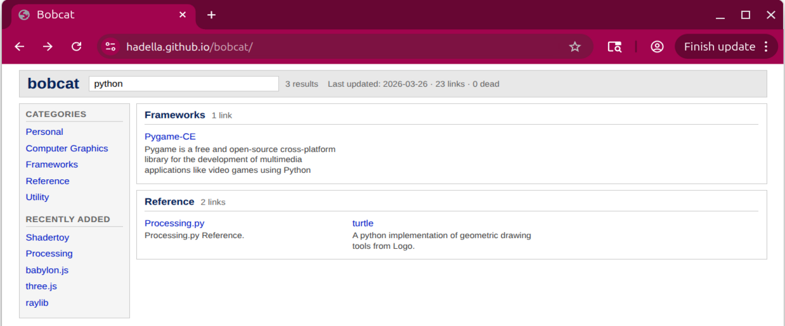
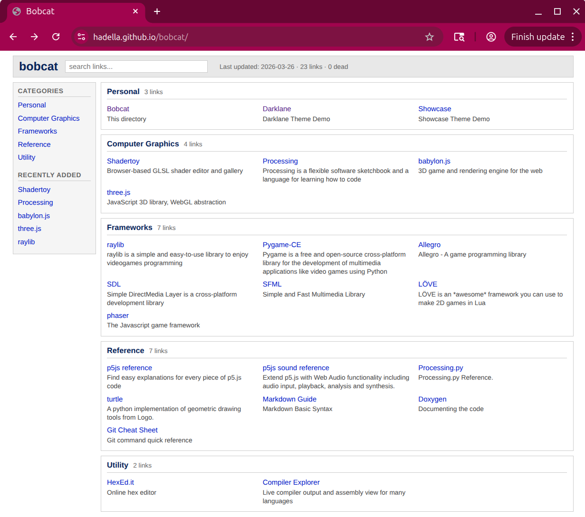

Bobcat: A Personal Link Directory
I built bobcat as a personal link directory—a single page to organize all the websites I actually use, inspired by the link directories of the late 90s like Yahoo and DMOZ.
The Problem
Browser bookmarks pile up and become useless. You save something thinking you’ll find it later, but eventually it just gets lost and buried. And over time, bookmarked links die. I wanted something simpler: one clean page with all my frequently-used links, organized by category, with search.
What It Is
Bobcat is a Hugo site that reads link data from TOML files and generates a static directory page. The design is light and simple, similar to old web directories from the late 90s.
Each category lives in its own data file:
# data/links/game-dev.toml
[[link]]
title = "raylib"
url = "https://www.raylib.com/"
desc = "raylib is a simple and easy-to-use library to enjoy videogames programming"
added = "2026-03-25"
tags = ["clang","game-programming"]
[[link]]
title = "Allegro"
url = "https://liballeg.org/"
desc = "Allegro - A game programming library"
added = "2026-03-25"
tags = ["clang","game-programming"]
Hugo builds these into a single page with fuzzy search powered by Fuse.js.
Why This Works
What makes this interesting is using Hugo for something that’s not a blog, portfolio, or product site. It’s just a personal directory. The project is easily cloneable—anyone could fork it and customize the categories for their own use cases.
I can imagine this being useful for niche collections. If you’re into LEGO and frequently reference Rebrickable or Bricklink sets, you could organize hundreds of links by theme or part number and search by keyword instantly. Same idea for YouTube channels, documentation sites, or any specialized collection where bookmarks fall short.
The key is curation. Right now I’m still populating categories, and that’s the real work—deciding what actually deserves a spot.
The Stack
The tech side was straightforward (though I had help):
- Hugo for static site generation
- Fuse.js for client-side fuzzy search
- Makefile for build and deploy commands
- GitHub Pages for hosting
I also added lychee for dead link checking.
See It In Action

The project is live with the source code available on GitHub.

It’s sparse right now, but functional.
What’s Useful
Having one page that loads instantly and shows everything is the point. No folders to dig through, no sync issues, no extensions. Just a search box and a list.
If your bookmarks are a mess and you keep visiting the same 50 sites, this kind of setup might be worth trying.